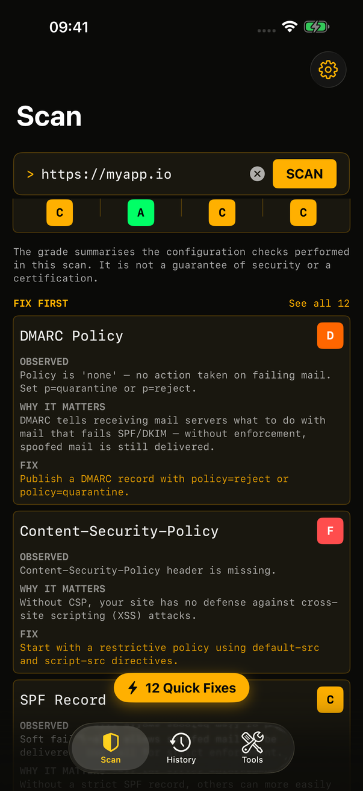
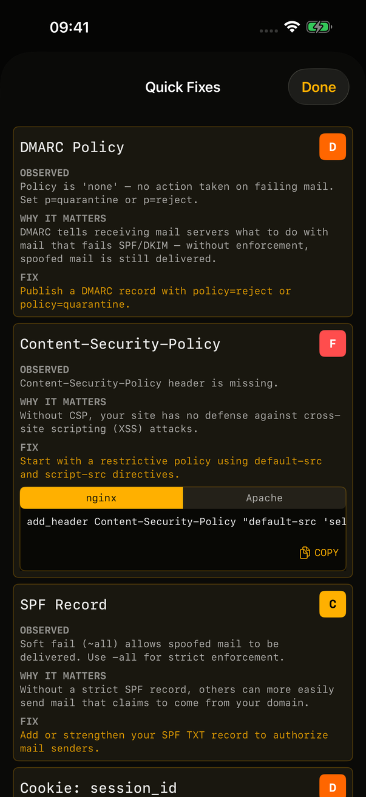
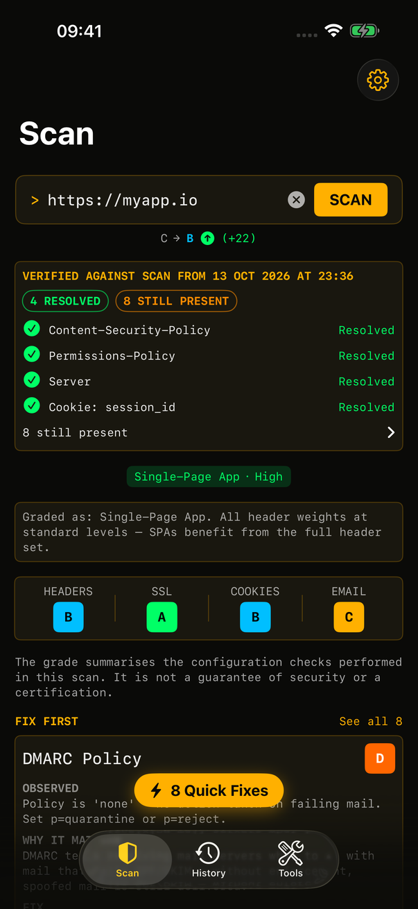
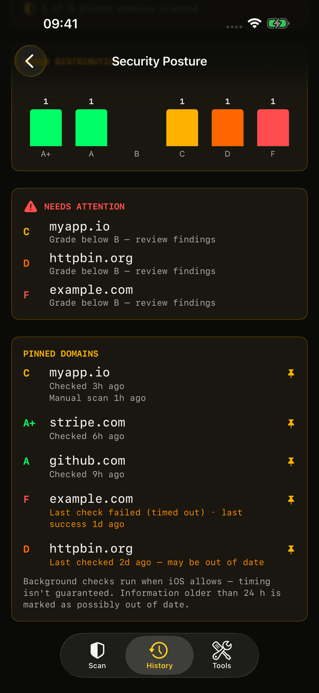

1 · Understand
An A+ to F grade that summarises the checks performed, with the highest-impact fixes first. A grade is not a guarantee of security or a certification, and GuardPad says so.
GuardPad checks a website's security configuration from your iPhone or iPad, puts the three fixes that matter most at the top, and after you change your server tells you finding by finding what is resolved, still present, new — or could not be verified.
Built for freelance developers and small web agencies who look after client sites.
An A+ to F grade that summarises the checks performed, with the highest-impact fixes first. A grade is not a guarantee of security or a certification, and GuardPad says so.
Every finding shows what was observed, why it matters and what to change. PRO adds ready-to-paste config for nginx, Apache, Express.js and Caddy.
Rescan the same site. Each earlier finding is marked Resolved, Still present, New or Not verified. An unchanged overall grade never hides a fix, and an incomplete scan never counts as one.
Pin client sites. When iOS allows, GuardPad re-scans them in the background and notifies you only when a grade or header changes. Each site shows when it was last checked — and whether that check failed or is getting old. PRO.
11 graded security headers, SSL/TLS including post-quantum key exchange, cookie flags, SPF, DMARC, DKIM, MTA-STS and BIMI, redirects, security.txt and WAF/CDN fingerprints — mapped to OWASP Top 10:2025.
No account. No analytics SDKs. No tracking. Scans run from your device and results stay on it. Feedback is optional — you see the whole message first and send it yourself.




Results now open with your top three fixes: what was observed, why it matters, and what to change.
After changing your server, rescan from the fix list. Each earlier finding is marked Resolved, Still present, New or Not verified — and PDF and Markdown reports include the verification.
Each pinned domain shows when it was last checked in the background, whether the last check failed, and when the information may be out of date. You're told if Background App Refresh or notifications are off.
"Report an incorrect result" on findings, and "Send Feedback / Request a Feature" in Settings. You preview everything before you send it from Mail — nothing is sent automatically.
Scans of different sites are no longer compared, the SSL badge shows the direction of change, Restore Purchases syncs with the App Store first, and the largest text sizes no longer cut off the scan field.
Scanning, the fix list and rescan verification are free. So are history, widgets, the Share Extension and Siri.
Yearly or Lifetime
Prices are shown in the App Store in your currency. Every PRO feature is free to try for 3 days.
Background re-scans are periodic, not continuous: iOS decides when they run. Yearly covers up to five pinned domains, Lifetime covers one.
Download on App Store